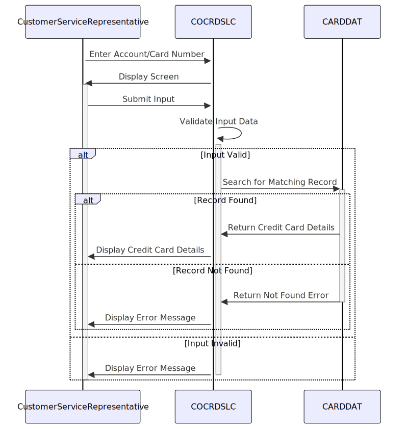

Gerado em: 1º de outubro de 2024
Título do Documento: Programa de Recuperação de Detalhes do Cartão de Crédito - Especificação Funcional
Descrição Resumida:
Este programa permite que representantes de atendimento ao cliente acessem informações detalhadas do cartão de crédito inserindo o número da conta ou o número do cartão. O programa prioriza a segurança dos dados validando as entradas do usuário antes de acessar dados confidenciais.
Histórias do Usuário:
Como representante de atendimento ao cliente, preciso conseguir recuperar rapidamente os detalhes do cartão de crédito de um cliente usando o número da conta ou o número do cartão para que eu possa auxiliá-lo em suas consultas.
Epic Relacionado:
3 - Gestão de Cartão de Crédito
Requisitos Funcionais:
-
Captura e Validação de Entrada:
- O sistema deve permitir que o usuário insira um número de conta de 11 dígitos ou um número de cartão de 16 dígitos.
- O sistema deve validar se o número da conta ou número do cartão inserido é numérico.
- O sistema deve exibir uma mensagem de erro se os dados inseridos não forem numéricos ou não tiverem o comprimento correto.
-
Pesquisa e Recuperação no Banco de Dados:
- O sistema deve pesquisar no banco de dados CARDDAT um registro correspondente usando o número da conta ou número do cartão inserido.
- Se um registro correspondente for encontrado, o sistema deve recuperar os seguintes detalhes do cartão de crédito:
- Nome do titular do cartão
- Número do cartão
- Data de validade
- Status
-
Exibição de Dados:
- O sistema deve exibir os detalhes do cartão de crédito recuperados ao usuário em um formato claro e legível.
Requisitos Não Funcionais:
-
Desempenho:
- O sistema deve recuperar e exibir os detalhes do cartão de crédito dentro de 3 segundos após o usuário enviar a solicitação.
-
Segurança:
- O sistema deve permitir que apenas usuários autorizados acessem os detalhes do cartão de crédito.
- O sistema não deve exibir nenhum detalhe do cartão de crédito se as informações inseridas forem inválidas.
-
Disponibilidade:
- O sistema deve estar disponível 24 horas por dia, 7 dias por semana.
-
Manutenibilidade:
- O sistema deve ser projetado de forma modular para permitir fácil manutenção e atualizações.
Critérios de Aceitação:
- O sistema recupera e exibe com sucesso os detalhes do cartão de crédito quando um número de conta ou número de cartão válido é inserido.
- O sistema exibe uma mensagem de erro apropriada quando informações inválidas ou incompletas são inseridas.
- O sistema atende aos requisitos de desempenho, segurança e disponibilidade descritos na seção de requisitos não funcionais.
Melhorias de Código:
- Tratamento de Erros Padronizado: Implementar uma abordagem consistente e amigável para lidar com erros, incluindo a exibição de mensagens de erro descritivas para o usuário.
- Otimização de Código: Explorar oportunidades para otimizar o código para melhorar o desempenho, especialmente ao lidar com interações com o banco de dados.
- Documentação: Adicionar comentários claros e concisos ao código para melhorar sua legibilidade e capacidade de manutenção.
- Parametrização: Considerar mover nomes de arquivo e outras constantes para um arquivo de configuração para facilitar a manutenção e configurações específicas do ambiente.
Melhorias de Segurança:
- Autenticação e Autorização: Implementar mecanismos robustos de autenticação para verificar as identidades dos usuários e autorizar o acesso a informações confidenciais do cartão de crédito.
- Limpeza de Entrada: Limpar todas as entradas do usuário para evitar vulnerabilidades como injeção de SQL.
- Registro e Auditoria: Registrar todas as tentativas de acesso a dados, incluindo detalhes do usuário, carimbos de data/hora e ações executadas, para auditoria de segurança e fins de monitoramento.
- Criptografia de Dados: Criptografar dados confidenciais do cartão de crédito em trânsito e em repouso para protegê-los de acesso não autorizado.
Diagrama Conceitual:

–Made by “Smart Engineering” (by Compass.UOL)–